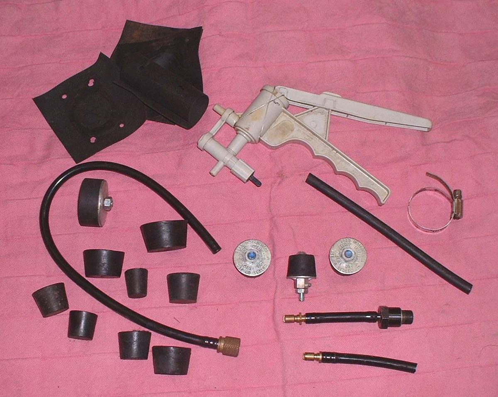

A two-stroke engine needs a sealed crankcase. When the piston goes down it squeezes the mixture in the crankcase and pushes it up through the transfer ports. When the piston goes up it makes a vacuum under it that pulls in more mixture through the carburettor or reed valve. A leak in the crankcase spoils both. This test finds out whether the bottom end holds pressure and vacuum.
Safety
- Use only the pressure given in your bike's manual. Too much pressure can push crankshaft seals out.
- Do not pressurise with an air compressor directly. Use a hand pump with a gauge.
- Engine cold. Exhaust and cylinder burn.
- Soapy water and a fuel-soaked engine are slippery. Clean up first.
You need
- A pressure and vacuum tester made for two-strokes, or a hand pump with a gauge and a fitting that screws into the spark plug hole.
- Plugs or blanking plates for the exhaust port or pipe flange and for the inlet or carburettor stub. Rubber bungs or plates with a gasket are common.
- The test pressure and the vacuum value for your bike from the manual.
Steps
- Remove the exhaust or its flange, and the carburettor or inlet. Seal the exhaust port and the inlet. Block any other open port or breather as the manual says.
- Fit the test fitting in the spark plug hole.
- Pressure test: pump up to the manual's pressure. The course gives six to fifteen pounds per square inch as the usual range, but use the manual figure. Watch the gauge for about five minutes. It should hold.
- If the gauge falls, spray soapy water on the crankshaft seal areas, the case joint, the cylinder base and the inlet flange. Bubbles show the leak.
- Vacuum test: use the pump in vacuum mode, take it to the manual vacuum (the course gives about five to seven inches of mercury as usual), and watch for about five minutes. It should hold.
- A seal that leaks only when cold may pass the test once warm. Repeat after the engine has stood overnight, and test cold.
- Cure the leak: - Crankshaft seals worn or hard: fit new seals. See Fit an oil seal. - Case or cylinder base joint: new base gasket or the sealant the manual calls for. - Crack or hole in a case: the case needs replacing. Welding usually warps it.
- Remember that a leaking clutch-side seal lets gearbox oil into the crankcase, which makes heavy smoke. A leaking generator-side seal draws in air, making the mixture lean.
- When a gasket is called for at the crankcase joint, fit a gasket. When the manual calls for liquid sealant, use only that. Swapping one for the other changes the side clearance of the shafts.
Check your work
- Pressure and vacuum hold for the whole test time.
- Engine starts from cold without long cranking, idles steadily and does not run lean (a new leak shows as a lean misfire or hard starting).
- No smoke from gearbox oil after the clutch-side seal is replaced.
If it did not fix the problem
- Check the inlet and carburettor flange for air leaks: Find an intake air leak.
- Still hard to start or lean: Hard to start when the engine is cold, Engine runs hot and lean.
- Compression is low: Test engine compression.